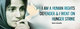

پذيرش > اخبار > ابراز نگرانی بیست و دو سازمان زنان و حقوق بشری نسبت به وضعیت نسرین ستوده و دیگر (...)


 ابراز نگرانی بیست و دو سازمان زنان و حقوق بشری نسبت به وضعیت نسرین ستوده و دیگر زندانیان عقیدتی ابراز نگرانی بیست و دو سازمان زنان و حقوق بشری نسبت به وضعیت نسرین ستوده و دیگر زندانیان عقیدتی
22 آبان 1391 - - نسخه قابل چاپ
برابری جنسیتی برای ایران: 22 سازمان زنان و حقوق بشری و 257 نفر از مدافعان حقوق زنان از 35کشور جهان در بیانیه ای خطاب به مقامات ایرانی نسبت به وضعیت ازسلامتی زنان زندانی سیاسی ابراز نگرانی کردند.
این بیانیه پس از آن منتشر شد که نه نفر از زنان زندانی بند سیاسی زندان اوین در اعتراض به هجوم ماموران امنیتی زندان به بند و بازرسی بدنی خشونت بار دست به اعتصاب غذا زدند. ژیلا بنی یعقوب، بهاره هدایت، نازنین دیهیمی، شیوا نظرآهاری، مهسا امرآبادی، حکیمه شکری، ژیلا کرم زاده مکوندی، نسیم سلطان بیگی و راحله ذکایی این اقدام خشونت آمیز ماموران را مصداق آزار جنسی اعلام کردند. این زندانیان پس از تنظیم شکایت نامه ای از ماموران زندان به اعتصاب خود پایان دادند.
بیانیه مدافعان حقوق زنان همچنین به وضعیت نسرین ستوده، وکیل دادگستری و فعال حقوق زنان و کودکان، اشاره می کند. نسرین ستوده اعتصاب غذای خود را از تاریخ 17 اکتبر ( 26 مهرماه) در اعتراض به وضعیت ملاقات با خانواده اش و ممنوع الخروجی دختر دوازده ساله اش دست به اعتصاب غذای نامحدود زد. این اعتصاب غذا امروز به بیست و ششمین روز خود رسید. در این بیانیه آمده است: "ما امضاکنندگان این بیانیه نگرانی عمیق خود را از وضعیت سلامتی نسرین ستوده و سایر زندانیان اعتصاب کننده اعلام می داریم. ما از مسئولان ایران می خواهیم که فورا نسبت به آزادی زندانیان عقیدتی اقدام کرده و احقاق حقوق آنان را تا زمانیکه در زندان هستند تضمین نمایند".
Afghanistan
Hassina, Afghan Women’s Network - Tariq Sapi, ABC - Wazhma Frogh, RIWPS – Zainab ,SW
Australia
R E Russell, Ruth Elizabeth Russell, Anne S Walker, Beth McMon, Karen Nobes
Bangladesh
Kazi Rabeya Ame, The Hunger Project Bangladesh
Bahrain
Mariam Alkhawaja
Belgium
Nuozzi Cynthia
Canada
Diana Sarosi, Narges Kermanshahi, Rachael Dempsey, Saira Zuberi
Costa Rica
Laurencia Saenz
Colombia
Patricia Guerrero, Liga de Mujeres Desplazadas
Dominican Republic
María Cuervo
England
Kamran Hashemi, Soudeh RAD, Helen Gambold, Syma Sayyah-Afshar, Theresa Evans
Egypt
Claudia ruta, UN WOMEN - Rana Korayem, Rana Korayem, Dina Wahba, Noha Roushdy, Sally Zohney, Yara Sallam
Fiji
Merewairita Naisua-Moci, Fijian Teachers Association - Paulini Turagabeci, YWCA Fiji - Vanessa Griffen, Individual, Matelita Ana Rakacikaci, Noelene Nabulivou, Sian Rolls, Sima Chand
France
Ilène , Ilène Grange - Mathilde Roué, OLF, Amélie SAINTEMARIE, Aurore Valverde, Boillet, Camo, Catherine Charrier, Cathy Lavigne, Cathy Lavigne, Chahla Chafiq, Christele Rebillon, Darmon Léa, Eleonore Hasle, Florianne Garonne, François Léonard, Jean-François DEVANNEAUX, Jean-michel Selle, Justine BOUHEY BERNARD, Laurine Bricard, Léna Olivier, Lydia Narciso, Marie Estrade, Marie-laure Plantadit, Marion Castellanos, Mathilde Bertrand, Quesne Greg, Sarah Werner, Stéphane Thuault, Moussier Marion
Germany
Kadriye Baksi, sehrazat, Anna Dremel, Christiane Alisch, Ismail H. Polat, Rezvan Moghaddam, Rupert Rosenberger, Shokoofeh Montazeri, Stephanie Zorn, Stephanie Zorn
Ghana
Euphemia Akos Dzathor, African Women’s Active Nonviolence Initiatives for Social Change (AWANICh)
Iraq
Batool Al- Daghir, Woman Rights Center in Samawa - Ilham Makki, Al-Amal association - Janet Salim Benjamin, Etana Women Organization - Lamia Talebani, VOICE OF INDEPENDENT WOMEN ORGANIZATION – mjareh , muafaq hassan jareh - Noaman Muna, Iraqi Al-Amal Association - Peshawa Lateef, Private - Saadia F.Hassoon , Together to protect Human & the environment Association - Souad Aljazairy, IWMC – SALAR, Al Amal Association - Ala Ali, Iraqi Al-Amal Association - حقي كريم هادي, جمية حماية وتطوير الاسرة العراقية - Hanaa Edwar, Hikmat Hussein, Ta’meem Al.Azawi
Organizations
ALmahaba we ALsalam fourm for student and youth, Iraqi Women Network, Salam AL-Rafidain.org, Women Empowerment
Ireland
Michelle Foley, Front Line Defenders, Conor Scott, Grainne Kilcullen, John Rogers, John Rogers, N. Nakhshab
Italy
Sabri Njafi, Assoiazione Studi e Riceche sulle Donne iraniane, Eleonora Cordovani, Amir Rashidi
India
Aniket Alam, Sonali Roy
Indonesia
Hayu Dyah
Iran
Dorsa Sobhani, Maryam Hosseinkhah, Marziyeh Bakhshizadeh, Naghmeh Gh., Nahid Mirhaj, Saghar Qyasi, Somaye Rashidi, Maryam Ahari, Navid Mohebbi, Parisa Kakaee, Roja Bandari, Sepideh Yousefzadeh, Shadi Sadr, Shahnaz Irani, Sima Hosseinzadeh
Japan
Kaoru Ueda
Netherlands
Krisztina Kovacs, mahshad, Rahman Javanmardi, Cheng Ong
Norway
Asieh Amini
Lebanon
Faysal El Kak, Lebanese Society of ObGyn - Toufic Sarieddine, Toufic Sarieddine, Bassem Chit, Bernadette Daou, Cynthia Aoun, Farah Kobaissy, Hiba Abbani, Lynn Darwich, sarah chreif
Organization
Nasawiya, a feminist collective
Libya
Razan Naeem ALmoghrabi
Oman
Usama, Usama Mohamed
Papua New Guinea
Rachael Tommbe
Philippines
Mary Jane Real
Portugal
Almerinda Bento
Papua New Guinea
Rachael Tommbe
Portugal
Almerinda Bento
Pakistan
Y. Zaidi
Serbia
Gordana Subotic, Women in black
Spain
CEIPAZ
Sewden
Sara Mohammad, Never Forget Pela and Fadime Organisation- Sweden- www.gapf.se – acb, ann-charlotte bjorklund - Anna-Klara Bratt, FEMINISTISKT PERSPEKTIV - Hilde Selander, International Female Film Festival Malmö - Jenny Rönngren, Feministiskt Perspektiv - Nima Korhasani, SKF - Nina Karlsson, HOMA Kommitén - Sabbir Khan, International Forum for Secular Bangladesh - Samuel E Rajeus, Samuel Rajeus - Tahmoures Yassami, Iranian and Swedish Association – Malmö - Tom Toiviainen, from a democracy - Nina Nazanin Karlsson, Iransk-svenska förening, A. Noroozi, Azar Mahloujian, Bengt Backlund, Birgitta Englin, Elisabeth Hellman, Emilie Mikkelson, Eva Nyblom, Eva Svegborn, farahroz Rangbar, Fredrik Elg, Gertrud Wincrantz-Wernstedt, Gursimer Singh, Hanna Jörgensen, Hans Ollaiver, Jamshid Moshkani, Jila Mossaed, Jonas Alwall, Kristina Hultman, KvR, Lady Michelle Einarsson, Layla Khairallah, Lena Olsson , Maj-Britt Pamp, Margareta Johansson, Martin Ullander, Nazi Raha, Peter Nordevang, Ragnhild Blomdahl, Richard Rosengren, sholeh irani, Ulrika Winbäck, Viola Ollaiver, Ylva Rehnberg, Zayera Khan
OrganizationIra
Feminist dialog
Saudi Arabia
Wajeha Al-Huwaider
Sri Lanka
Kumudini Samuel
Syria
Fadi Saleh
Tunisia
Ahlem Belhadj, Association tunisienne des femmes démocrates - Arabya KOUSRI, Chehida Rakia, khadija Arfaoui, khadija Arfaoui
Turkey
Pinar Ilkkaracan, Çiğdem Şahin, Emre Daşar, WOMEN FOR WOMEN’S HUMAN RIGHTS, Arzu Küçük, Derya çiçek, Free İranian, Hulya, Hak Savunucuları, Nihal Boztekin, Asuman, Ayse Coskun, Ayse Ulku Ozakin, Burcu Arıkan, C. Oral Ozdemir, Efsa Kuraner, Enta, Eylül Dizdaroğlu, Ezgitatlıoğlu, Gizem Haspolat, Gökçen Durutaş, Gülüm Albut, Hülya Türker, Işık Ergüden, Mine Sak, Namık Tolunay, Oktay Cicek, Pınar Yıldız, Ronida Heval, Şehlem Sebik, Serap Kalkan, Suzan Bayhan, Elif Can, Raduza, Öğretmen, Ayşe uysal, Dilsah Saylan, Amargi - Elif Berk, Rainbow Women Association/Gökkuşağı Kadın Derneği – Yasemin Öz, Kaos GL – Ağbulak, hayal – Kaan, Burak - Seyit Bilgin, Seyit Bilgin - Iranda kadın hak. Ihl., hak savunucuları
United States
Samuel reshi , haku social organization - Nancy K, CODEPINK Women for Peace - Negar Chevre , Negar Chevre - Elahé Hicks , Partners for Rights – L.A. Hyder, Niki Akhavan, Ahmad Arbaboun, Nayereh Tohidi, Arman Rezakhani, Evelyne Accad, Holakou Rahmanian, James Fine, Jennifer Wiens, Negar Sammaknejad, NuNu Win, Soheil Parhizi, Soraya Fallah, Aida Saadat, Esha Momeni
Organization
WNN - Women News Network, International Campaign In support of Nasrin Sotoudeh, Neda For Free Iran, PersianIcons.org
Others
Rolf Vaardal
ارسال به
بالاترین
،
توییتر
،
فریندفید
،
فیسبوک
در همين بخش :
 پروین ذبیحی برنده جایزه حقوق بشری سازمان غيردولتى اتريشى سودويند شد پروین ذبیحی برنده جایزه حقوق بشری سازمان غيردولتى اتريشى سودويند شد
پخش کارت پستال و بروشور در روز جهانی زن در تهران
تمدید زمان برای امضای بیانیهی جمعی از فعالان زن به مناسبت هشت مارس
مجوزی که در نطفه خفه شد
بیش از 2000 امضا در اعتراض به تبعیض های آموزشی به مجلس تحویل داده شد
ديگر بخش ها :
طرح یک میلیون امضا
|
مقالات
|
سایت نوشته ها
|
اخبار
|
گزارش كمپين
|
گفت و گو
|
علیه سکوت
|
كوچه به كوچه
|
نامه های شما
|
گزارش ویژه
|
گفتگو با اعضا
|
ویژه سالگرد کمپین
|
تصویر برابری
|
دل آرام علی
|
تریبون
|
مقالات
|
تاریخ شفاهی
|
خارج از چارچوب
|
کتابخانه
|
درباره کمپین
|
کمپین در شهرها
|
کمپین در بند
|
صدای تغییر
|
ویژه 22 خرداد
|
لایحه حمایت از خانواده
|
گالری
|
عشا مومنی
|
امیر یعقوبعلی
|
خدیجه مقدم
|
راحله عسگری زاده و نسیم خسروی
|
پروین اردلان،جلوه جواهری، مریم حسین خواه، ناهید کشاورز
|
زینب پیغمبرزاده
|
سعیده امین، سارا ایمانیان، محبوبه حسین زاده، ناهید کشاورز و همایون نامی
|
احترام شادفر
|
نسیم سرابندی زاده،فاطمه دهدشتی
|
وبلاگ مهمان
|
پرونده خرم آباد
|
دستگیری ها
|
مریم مالک
|
پرستو اللهیاری
|
مهرنوش اعتمادی
|
سمیه رشیدی
|
Other Languages
|
همراهان
|
«فراخوان کمپین ده روز با بهاره هدایت»
| English
|